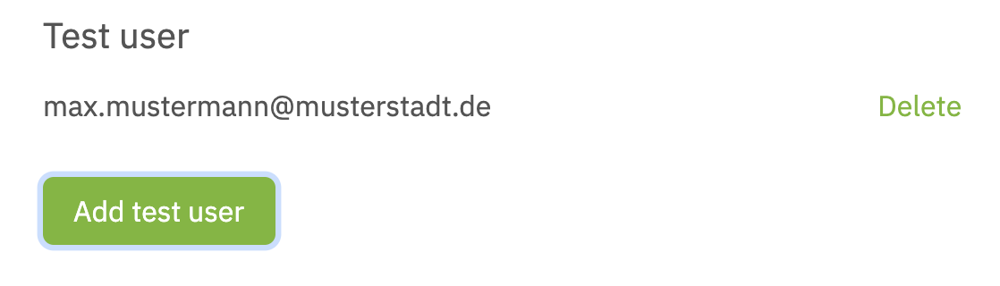

Services¶
Services allow you to manage all the necessary technical and non-technical details to integrate the netID Sign Sign-on into one of your offerings. Registered companies can have multiple services, each service can have multiple clients.
At service level you manage mainly non-technical details (branding, data privacy and usage terms), whereas technical details are managed at the individual client level.
Lifecycle¶
Services have a simple lifecycle, once they are created they immediately get into the active state and can be used. At any point in time you can choose to delete a specific service, which puts the service and all of its clients into the state deleted.
Services remain in the state deleted for 14 days, once these are passed it will be permanently removed. Within the 14 days grace period services can be re-activated and return to into the active state.
Sandboxed Mode¶
Besides the general status as described above, services run by default (meaning after they are created) in a sandboxed mode which means they are not yet used/approved for production use. In sandboxed mode, a service and its respective clients are fully functional, but can only be used with explicitly whitelisted test users
Detailed Functionality¶
Create a Service¶
Select Services in the menu, click Add service and fill in the required details in the following screen.

Service domain is the domain of your customer facing website. Also, links to data privacy information (URL privacy policy) and terms of usage (URL terms of usage) should be supplied. As a best practice use separate services for development and production environments.
Note: for testing purposes, you can actually enter any domain and URL values into this form, as they are not technically relevant in order to get a initial testing integration running.
The details provided here will be used within the netID User Interfaces (Single Sign-on, Privacy Center). If you are deploying into a production environment make sure that to provide accurate information. These values will also be inspected before a service is allowed to be used without sandboxed mode.
To save your service, click on Add service.
The next step to start the integration of netID for that service is to create a client for it. For details see client tutorial
Service Details View¶
To manage the details of services and their respective clients you need to navigate to the services details view by selecting Services in the navigation on the left, which will show you the list of all services, and by clicking on Details on the right hand of the service name.
Manage Test Users¶
To manage users that can be used with sandboxed services (see Sandboxed Mode), you can managed the whitelist of users for a specific service in the details view under Test user

Simply add users with Add test user or remove them with Delete
Approval for production use¶
Once you've run thought the technical integration, you can request your service to be approved for usage in a production environment (without limitation to test users). To start the process open the details view of the service you want to activate and click on Request service release.
The service will be reviewed by the EnID and approved for production usage (not limited to test users)
Edit a Service¶
To alter an already existing service navigate to the service details view and click Edit next to the name of the service.
In order to change details of a service you will be prompted to re-enter you password.
Make the desired changes and updates and save the changes with a click on Update Service.
Delete a Service¶
To delete an already existing service, navigate to the service details view details view
- Select Show more details.
- Click Delete Service.
To permanently delete the service, confirm the process by re-entering your password.
The service will remain listed for the next 14 days with a status DELETED. Within that timeframe you can recover a deleted service before it is permanently deleted and removed from your service overview. Reactivate a service
Reactivate a Service¶
To re-active an already deleted service, navigate to the service details view details view for that service.
- Click Show more details.
- Click Reactivate Service.
To confirm the reactivation, confirm the process by re-entering your password. Once done the service will appear with an Active status.